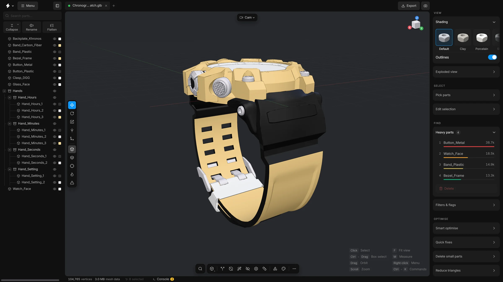

What MeshOptimiser is
A free app that runs on your own computer. It turns a heavy CAD file into a light 3D file and lets you inspect, clean up and export it.
MeshOptimiser is a free, open-source app that runs on your own computer. You give it a heavy 3D file from an engineering program. It gives you back a much lighter file that a web page or another 3D program can load quickly, and a viewer to look at the model, clean it up and export it.
You do not need to know anything about 3D to start. These pages explain each word the first time it is used, and Words you will meet lists them all in one place.
The problem it solves
Engineers design machines in CAD programs (CAD stands for computer-aided design). They usually hand the design over as a STEP file, a common exchange format for CAD. A STEP file describes every part exactly, down to the last screw, so it is often very large and slow to show.
A real assembly (a model made of many parts) can hold 400 identical bolts and 80 identical brackets. MeshOptimiser notices the parts that are the same and stores each shape once, with a list of the places where it sits. It also turns the exact CAD surfaces into triangles, which is what screens draw, and can leave out parts that are too small to see.
- 400 bolts × 50 KB
- Become 1 shape of 50 KB and 400 positions.
- 80 brackets × 12 KB
- Become 1 shape of 12 KB and 80 positions.
- A 320 MB STEP file
- Becomes an 11 MB compressed GLB. This is the example from the app’s own README, not a promise for every file.
The two halves
- The converter. A small Python program,
step2glb.py, reads a STEP file and writes a GLB file. GLB is a compact 3D format that browsers and most 3D programs can open. - The viewer. A page that opens in a window of its own and shows the model. Here you look around, select parts, remove what you do not need, reduce triangles, recolour, and export.
You do not have to run the two halves yourself. One launcher starts everything, and you drop a file on the window.


What you can do with it
- Open STEP, GLB, glTF, FBX, OBJ, 3MF and STL files.
- See how heavy a model is, and which parts make it heavy.
- Delete parts nobody will see, close holes, simplify parts and reduce triangles.
- Rename, group and tidy the list of parts.
- Recolour materials, move parts, measure distances and add standard parts from a library.
- Save your work, and export to GLB, glTF, FBX, USDZ, OBJ, STL, PLY, or a parts list.
What it is not
- It is not a CAD program. It reads STEP files but does not write them, and it does not edit exact CAD surfaces.
- It is not an online service. Nothing is uploaded to the internet. See Privacy and offline use.
- It is not finished. The version is below 1.0, and things may change between versions.